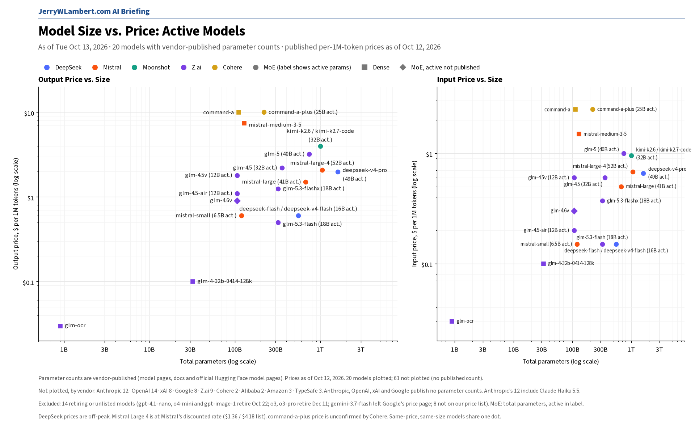
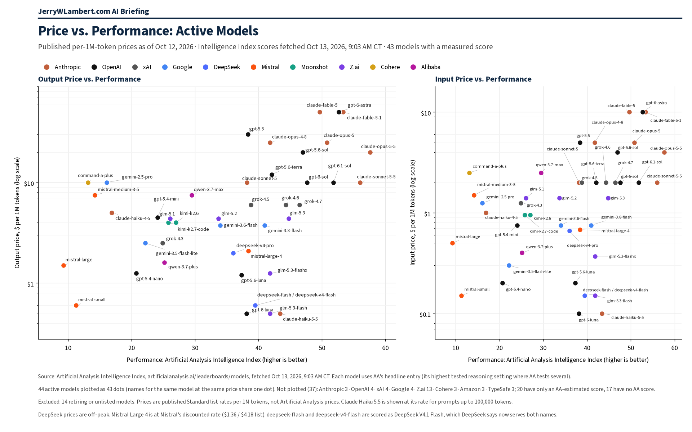

Daily Model Brief, October 13, 2026
Meta opened Muse Wonder on its pay-as-you-go API at $4.00 input and $20.00 output per million tokens. Correction: Z.ai moved ten GLM models on its price page rather than dropping them; their prices are unchanged.
Download PDFExecutive Summary
Meta opened Muse Wonder, its most capable model, on its pay-as-you-go Model API. muse-wonder-1.0 lists at $4.00 per million input tokens, $0.20 for cached input and $20.00 for output, with no long-context surcharge and a context window of about 1 million tokens. Meta labels it a preview, but anyone with a Model API key can use it (Standard mode only).
That is about 3x muse-spark on input ($1.25) and about 5x on output ($4.25). Muse Spark prices are unchanged. A stronger variant, Muse Wonder Full, is available only inside Meta's Muse Code subscription, not on the API.
Correction to yesterday's brief: Z.ai did not drop the ten GLM models we reported missing (the GLM-4.5 family, GLM-4.7-FlashX, GLM-4-32B, GLM-4.6V / 4.6V-FlashX / 4.5V and GLM-OCR). It moved them into a collapsed “Other Pricing” section of its price page. Every price is unchanged, and nothing is being retired.
Google's deprecations page (updated 2026-10-12 UTC) now says the gemini-3.5-flash and gemini-3.7-flash endpoints are not shutting down; requests route automatically to gemini-3.6-flash and gemini-3.8-flash. Neither old name has its own price on Google's pricing page, so budget at the price of the model that serves the request.
Perplexity's resale list caught up to Anthropic's October 7 cut on Claude Sonnet 5.5 cache reads ($0.20 to $0.10 per million tokens). Anthropic, OpenAI, DeepSeek, Moonshot, MiniMax and Mistral published no price changes, and xAI changed wording only. Alibaba's main model prices are unchanged; a limited-time 20% discount label came off its HappyHorse video-editing rows.
TypeSafe Jev is unchanged at $0.042 input and free output. IBM Granite is unchanged at $0.0636 / $0.265. Amazon and Microsoft price pages still fail to load, ByteDance still shows no usable token price table, and Cohere still publishes no token price.
What This Means for Customers
- If you want Meta's top model on metered billing,
muse-wonder-1.0is now callable at $4.00 input and $20.00 output per million tokens, with limits of 3,000 requests and 4 million tokens per minute. It is labeled preview, so keep a fallback ready;muse-sparkis unchanged at $1.25 / $4.25. - Z.ai's GLM-4.5 family, GLM-4.7-FlashX, GLM-4-32B, the GLM-4.6V / 4.5V vision models and GLM-OCR are still listed and priced as before. Yesterday's advice to plan a fallback for them is withdrawn.
- If you still call
gemini-3.5-flashorgemini-3.7-flash, Google says those endpoints keep working and route togemini-3.6-flashandgemini-3.8-flash. Budget at the serving model's price ($0.75 input / $3.75 output for gemini-3.6-flash) and move callers to the model you intend to use. - If you price Claude 4.7 or later from list rates alone, re-check task cost. Anthropic says its newer tokenizer produces about 30% more tokens for the same text, so effective cost per task is higher even though the published $/MTok is unchanged.
- The October 22 and 23 dates are unchanged.
gpt-4.1-nano,o4-miniandgpt-image-1(OpenAI) shut down the evening of October 22 (CT), along with Google'sgemini-omni-flash-previewand Veo 3.1 previews. Google's deep-research-pro preview shuts down October 23. Perplexity retires its routes to older OpenAI models at 7:00 PM CT on October 23. - Claude Haiku 4.5 is still active, with retirement not sooner than October 15 and no date set. Keep a tested fallback ready.
New Models and Price Changes
Prices in USD per 1M tokens.
| Vendor | Model ID | Status | Input | Cached | Output |
|---|---|---|---|---|---|
| Meta | muse-wonder-1.0 | New on the pay-as-you-go Model API (preview, publicly available). Standard mode only; about 1M-token context; no long-context premium. | $4.00 | $0.20 | $20.00 |
| Meta | muse-spark | Unchanged. | $1.25 | $0.15 | $4.25 |
| Z.ai | glm-4.5 family, glm-4.7-flashx, glm-4-32b, glm-4.6v / 4.6v-flashx / 4.5v, glm-ocr | Correction: still listed, moved to a collapsed “Other Pricing” section. Prices unchanged. | Unchanged | Unchanged | Unchanged |
| gemini-3.5-flash | No price of its own. Endpoint is not shutting down; requests route to gemini-3.6-flash. | Not listed (served: $0.75) | Not listed ($0.075) | Not listed ($3.75) | |
| gemini-3.7-flash | No price of its own. Endpoint is not shutting down; requests route to gemini-3.8-flash. | Not listed | Not listed | Not listed | |
| Perplexity | anthropic/claude-sonnet-5-5 (resale) | Cache-read price now matches Anthropic's October 7 cut. | Unchanged | $0.10 (was $0.20) | Unchanged |
| Alibaba | qwen3.7-max | Unchanged (international list price). | $2.50 | Not listed | $7.50 |
| Alibaba | qwen3.7-plus | Unchanged (international list price). | $0.40 | Not listed | $1.60 |
| TypeSafe | jev-1.13.0 / jev-latest / jev-preview | Unchanged. | $0.042 | — | $0 |
| IBM | granite-4-h-small | Unchanged. | $0.0636 | Not listed | $0.265 |
- Meta's Muse Wonder has a 1,048,576-token context window and limits of 3,000 requests and 4 million tokens per minute. Meta lists it as available in Standard mode only on the Model API pay-as-you-go plan. Muse Wonder Full is part of the Muse Code subscription and has no API price. Meta's Muse Wonder model page returned an error this morning; the pricing and models pages loaded normally.
- Meta also raised contributor-mode requests per minute from 100 to 150 and Voice Transcribe concurrent streams from 128 to 256. Muse Spark prices are unchanged.
- Z.ai models moved to the “Other Pricing” section (all still priced, unchanged): glm-4.7-flashx, glm-4.5, glm-4.5-x, glm-4.5-air, glm-4.5-airx, glm-4-32b-0414-128k, glm-4.6v, glm-4.6v-flashx, glm-4.5v, glm-ocr. Remaining Z.ai list prices (glm-5.3 / 5.3-flash / 5.3-flashx / 5.2 / 5.1 / 5 / 4.7 / 4.6) are unchanged.
- Google's deprecations page now shows the shutdown date for gemini-3.5-flash and gemini-3.7-flash as “N/A” (previously “No shutdown date announced”) and says neither can be selected in Google AI Studio. Google's pricing and models pages are otherwise unchanged.
- Alibaba removed a limited-time 20% discount label from happyhorse-1.0-video-edit and related video rows. xAI changed wording only (pricing page last updated October 10, 2026). Mistral Large 4 stays on sale at $0.68 input and $2.09 output, with no end date.
- Amazon and Microsoft price pages could not be read today, ByteDance published no usable price table, Cohere still publishes no token prices, and IBM's supported-models docs returned 403. Their last confirmed prices stand.
Deprecations
| Vendor | Model ID | Shutdown (CT) | Replacement | Note |
|---|---|---|---|---|
| gemini-3.5-flash | Not shutting down (Google lists N/A) | gemini-3.6-flash (Google auto-route) | Updated today. Google says the endpoint is not shutting down and routes requests automatically. Not selectable in Google AI Studio. | |
| gemini-3.7-flash | Not shutting down (Google lists N/A) | gemini-3.8-flash (Google auto-route) | Updated today. Same wording as gemini-3.5-flash. | |
| deep-research-pro-preview-12-2025 | Fri Oct 23, 2026 (time not stated) | deep-research-preview-04-2026 | Unchanged. | |
| OpenAI | gpt-4.1-nano o4-mini gpt-image-1 | Thu Oct 22, 2026, 7:00 PM CT | gpt-5.6-luna gpt-5.6-terra gpt-image-2.5-sunburst or gpt-image-2.5-flare | Unchanged. OpenAI lists Oct 23 with no time; 7:00 PM CT Oct 22 is 00:00 UTC Oct 23. |
| gemini-omni-flash-preview | Thu Oct 22, 2026 (time not stated) | gemini-omni-1.1-flash | Unchanged. | |
| veo-3.1-generate-preview veo-3.1-fast-generate-preview veo-3.1-lite-generate-preview | Thu Oct 22, 2026 (time not stated) | gemini-omni-1.1-flash | Unchanged. | |
| gemini-3.1-flash-image | No shutdown date announced | gemini-nano-banana-2.1 | Unchanged. | |
| gemini-3.1-flash-tts-preview gemini-2.5-flash-preview-tts gemini-2.5-pro-preview-tts | Tue Nov 17, 2026 (time not stated) | gemini-3.8-flash-tts or gemini-3.8-flash-lite-tts | Unchanged. | |
| gemini-3.1-flash-live-preview gemini-2.5-flash-native-audio-preview-12-2025 | Tue Nov 17, 2026 (time not stated) | gemini-3.8-live | Unchanged. | |
| Anthropic | claude-sonnet-4-5-20250929 | Mon Nov 30, 2026 (time not stated) | claude-sonnet-5-5 | Unchanged. |
| Anthropic | claude-haiku-4-5-20251001 | Not sooner than Thu Oct 15, 2026; no date set | None named | Watch item. Still active. |
| Cohere | command-r command-r-plus | Deprecated Sep 15, 2025; no shutdown date set | command-r-08-2024 command-r-plus-08-2024 command-a-03-2025 | Closed to new customers; existing users keep access until retirement. |
- Perplexity will retire its Agent API and Orchestrator API routes to older OpenAI models (openai/gpt-5.4, gpt-5.4-mini, gpt-5.4-nano, gpt-5.2, gpt-5.1, gpt-5 and gpt-5-mini) at 7:00 PM CT on Fri Oct 23, 2026 (00:00 UTC Oct 24). Unchanged.
- Google also lists deep-research-preview-04-2026 and deep-research-max-preview-04-2026 with no shutdown date announced.
- Unverified: Google's deprecations page still shows gemini-2.5-flash-image shutting down Mon Mar 15, 2027, with gemini-3.1-flash-lite-image as the replacement, while Google's pricing page says it shut down Oct 2, 2026. Confirm with Google before you budget either date.
Model Size vs. Price

Across the 20 active models whose vendors publish parameter counts, price rises only loosely with total size (rank correlation 0.39 on output price). Anthropic, OpenAI, xAI and Google publish no parameter counts, so their models, including Claude Haiku 5.5 and GPT-6.1 Sol, are not plotted. Meta's new Muse Wonder is not yet in this chart. Prices as of October 12, 2026.
Price vs. Performance

Across the 44 active models with a measured Artificial Analysis Intelligence Index score (fetched Oct 13, 2026, 9:03 AM CT), price rises with performance only loosely (rank correlation 0.43 on output price). Claude Haiku 5.5 still leads at $0.50 or less per million output tokens (43.4). GPT-6.1 Sol scores 51.8 at $10 Standard. Meta's new Muse Wonder is not yet in this chart. Chart prices are as of October 12, 2026.
All times Central. Vendor prices, dates and model IDs are taken from first-party vendor pricing, model, deprecation and changelog pages as of 8:43 AM CT on October 13, 2026. Chart prices are as of October 12, 2026. Performance scores are from the Artificial Analysis Intelligence Index, fetched 9:03 AM CT on October 13, 2026. Items that could not be confirmed are marked unverified.